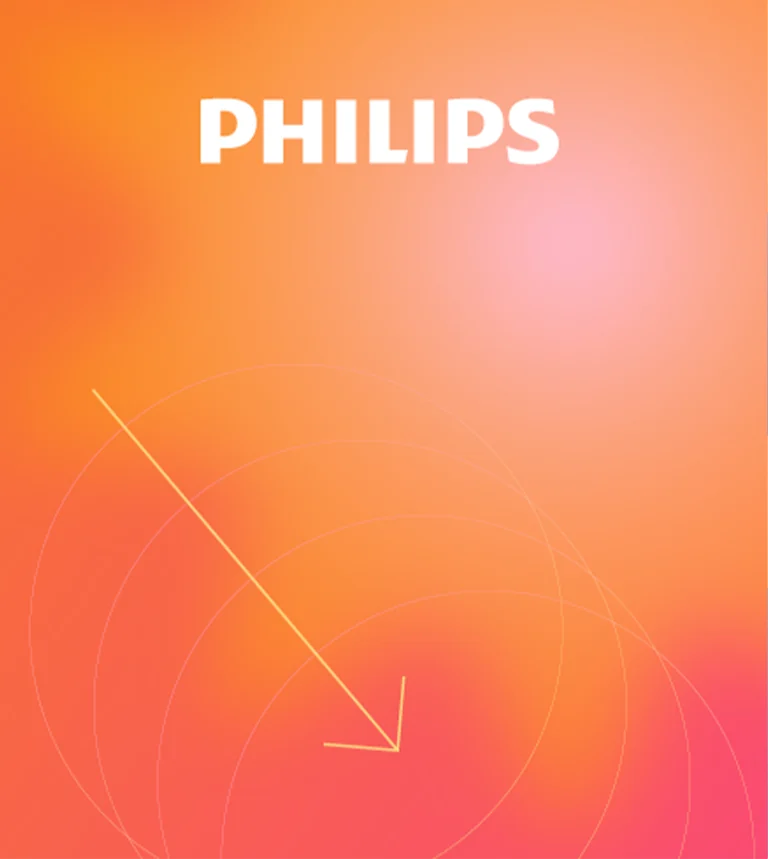
Explore the project ↗OUR WORK
Ideas with
a real-world expression.
A selection of identity and communications projects from the Trace portfolio.
Showing 17 projects
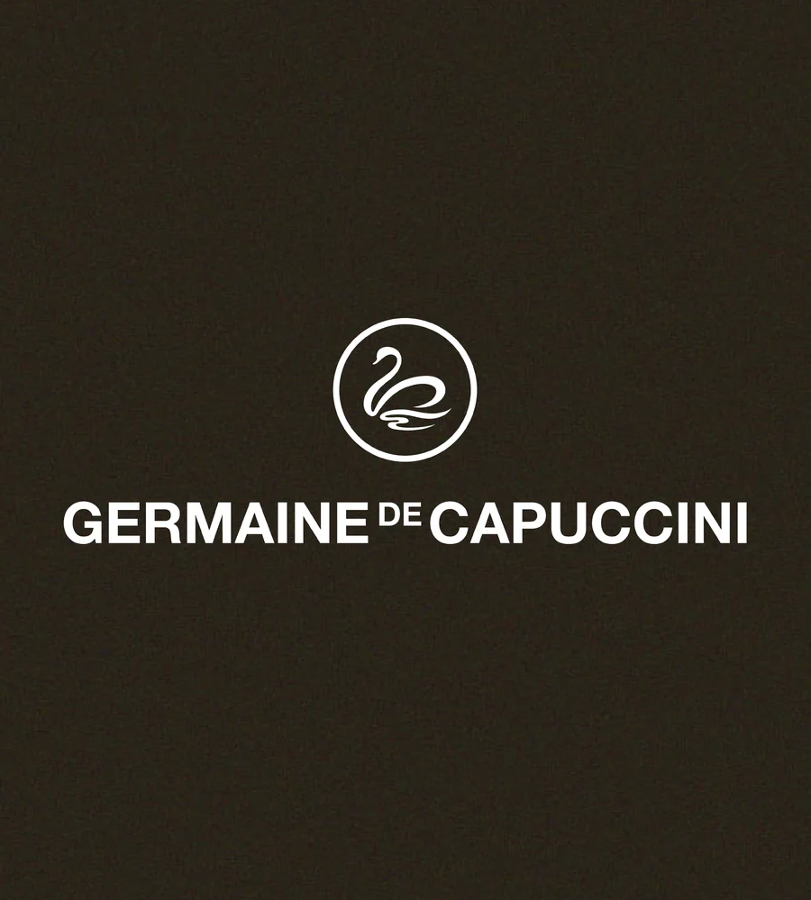
View original case study ↗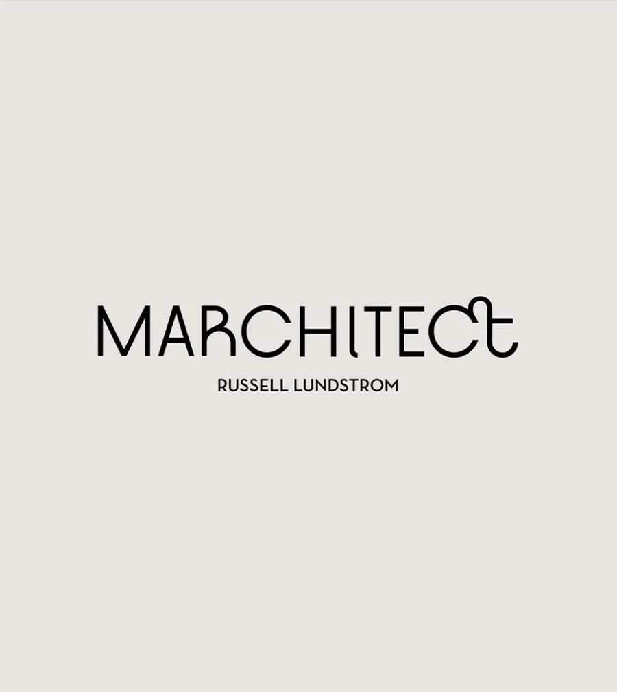
View original case study ↗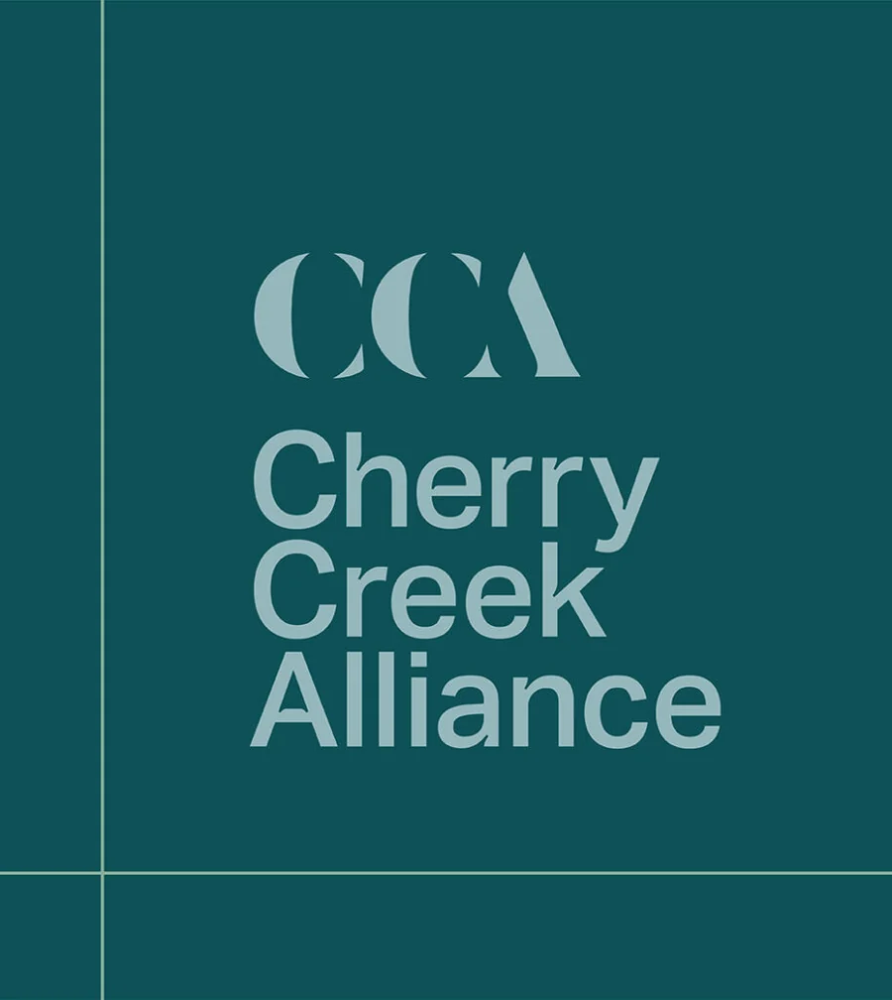
Explore the project ↗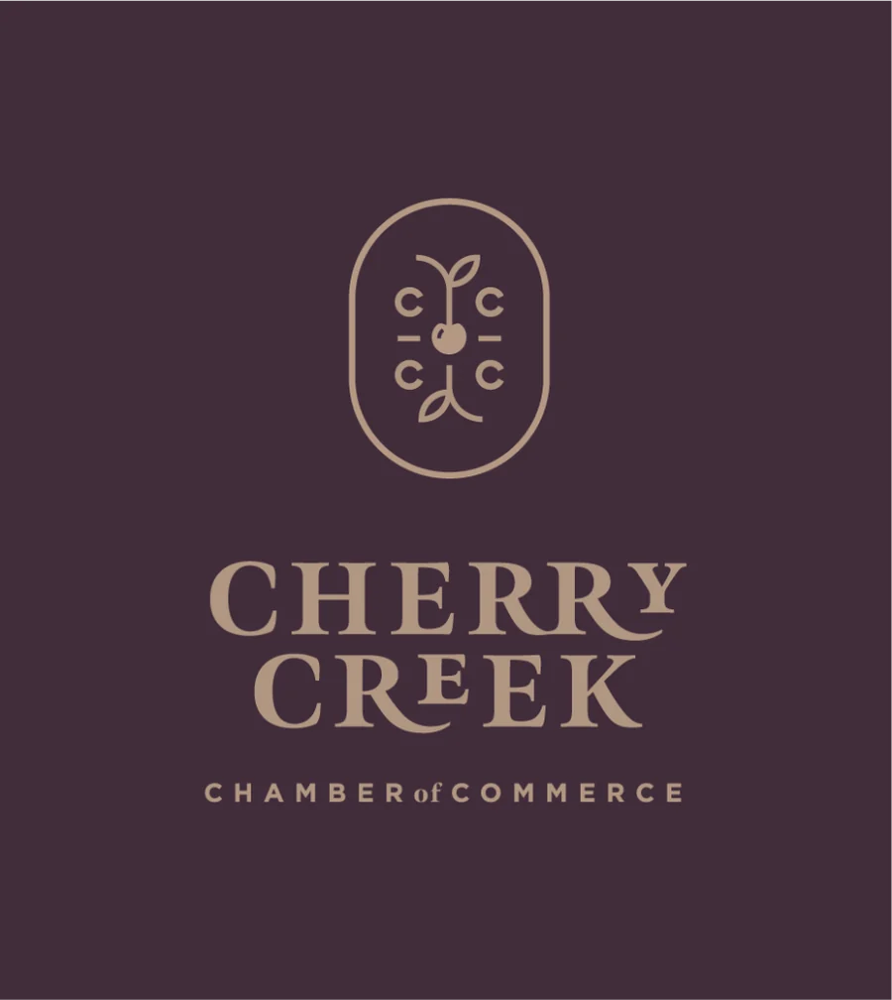
View original case study ↗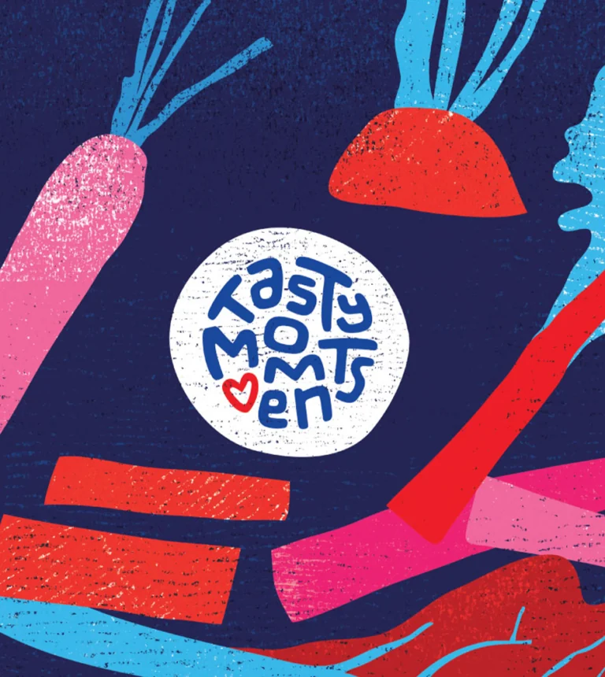
View original case study ↗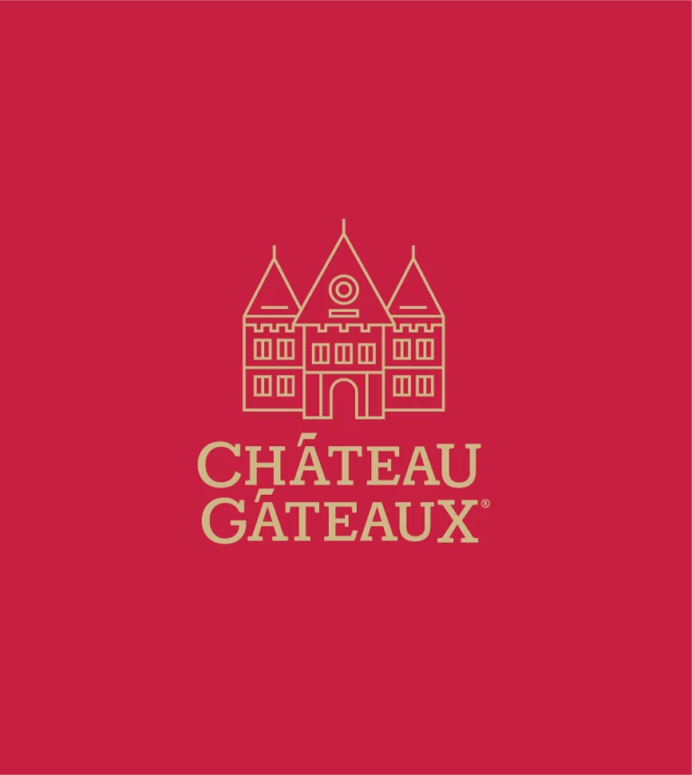
View original case study ↗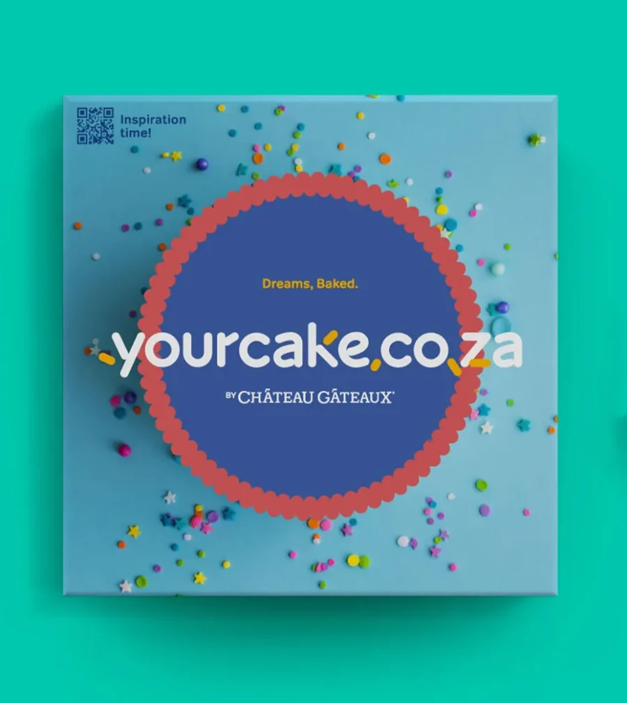
View original case study ↗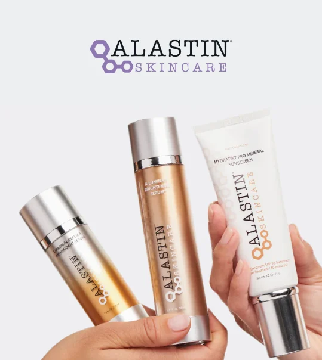
View original case study ↗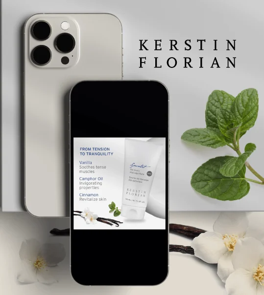
View original case study ↗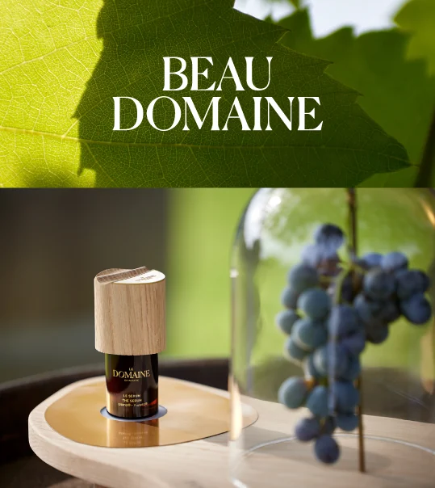
View original case study ↗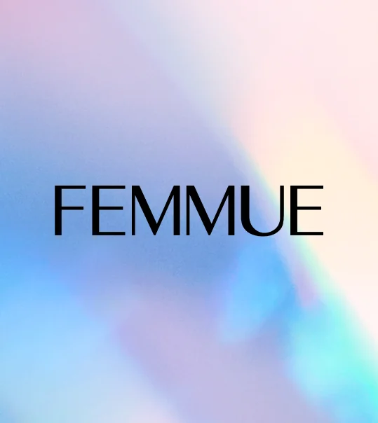
View original case study ↗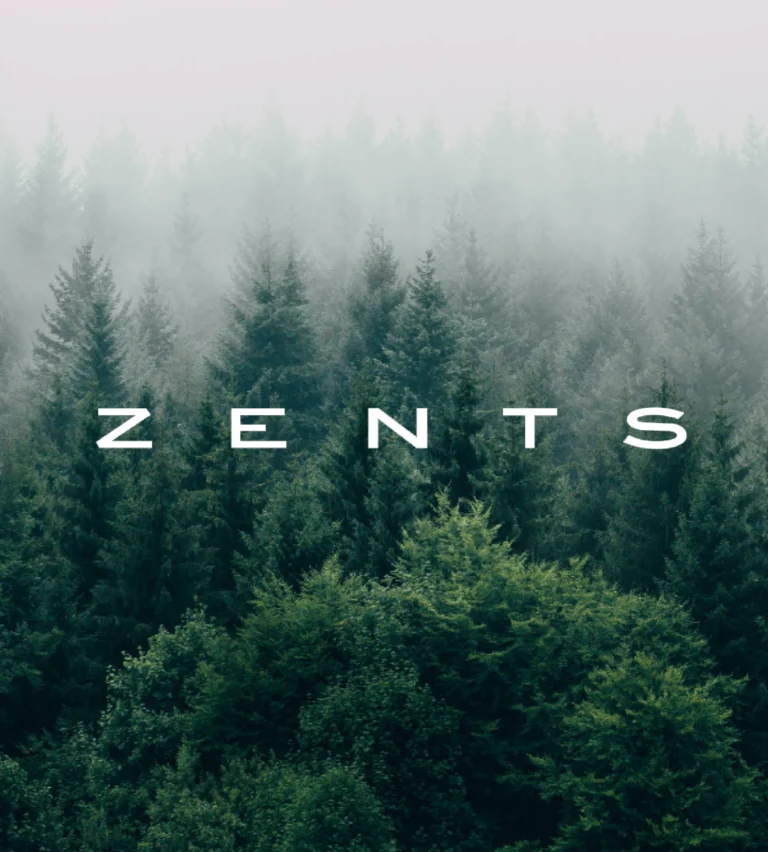
View original case study ↗BEHIND THE FINISHED WORK
The decisions
make the difference.
Each project starts with a particular business challenge.
Explore the brief, Trace’s contribution and the work that followed. We focus on the documented project scope rather than claiming results we cannot substantiate.